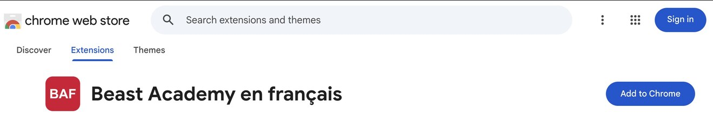
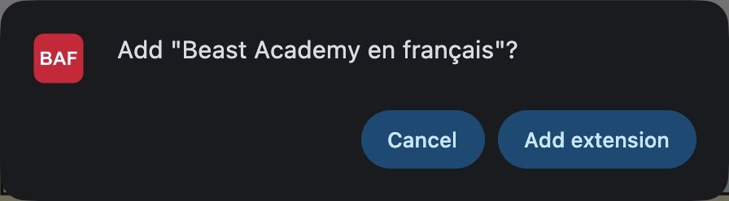
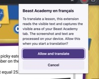
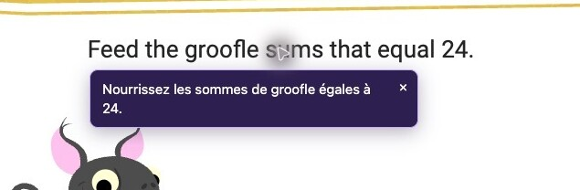
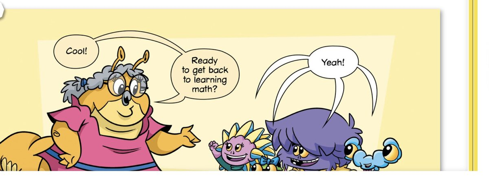
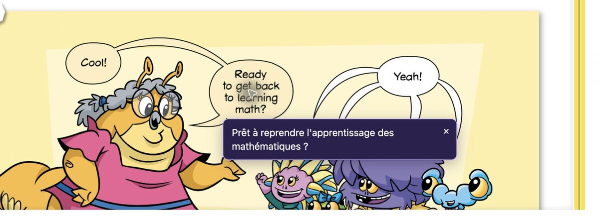

Read Beast Academy in French
Hover over an English instruction or speech bubble to see its French translation. Click to keep it open while you read.
Add to Chrome
Chrome 138+
Add to Firefox
Firefox 153+
How many dots are in each row?
Combien y a-t-il de points dans chaque rangée ?
Install in Chrome
Watch the Chrome walkthrough
Silent video. The written steps are below.
-
Open the Beast Academy en français listing in desktop Chrome and click Add to Chrome.

-
Click Add extension in Chrome’s confirmation dialog.

-
Click the puzzle-piece Extensions button next to the address bar. Click the pin next to Beast Academy en français so the red BAF icon
 stays in the toolbar.
stays in the toolbar.

Translate an exercise
-
Open an exercise in your Beast Academy classroom, or try the public demo exercise. Click BAF in the toolbar. On first use, read the privacy notice and choose Allow and translate.

- If prompted, click Préparer la traduction to let Chrome prepare its language model. Keep the popup open until scanning finishes.
-
Hover over an English instruction to see it in French. Click the text to pin the translation, or press Esc to close it.

Translate a book lesson
- Click the book icon above the demo exercise to open the lesson. Click BAF, wait for the scan, then hover over a speech bubble.
-
Scroll inside the book viewer to the next section you want to read. BAF scans only what’s visible, so click BAF again after scrolling to new text.

After scrolling, before scanning again. -
Wait for the scan, then hover over a newly visible speech bubble to read it in French. Repeat after you scroll to more text or change pages.

After scanning again and opening a translation.
Manual installation in Chrome
- Download the Chrome ZIP (version @@VERSION@@) and extract it.
- Open
chrome://extensionsin desktop Chrome and turn on Developer mode. - Choose Load unpacked and select the extracted folder that contains
manifest.json.
The extension uses your existing Beast Academy access. It translates visible text in exercises and books, including text in illustrations. Screenshots and lesson text stay on your device.
For a printable reference, see the unofficial English–French math glossary for Beast Academy (PDF).
Temporary installation in Firefox
- Download the Firefox ZIP (version @@VERSION@@) and extract it.
- In desktop Firefox, type
about:debugging#/runtime/this-firefoxin the address bar. - Click Load Temporary Add-on… and select
manifest.jsonfrom the extracted folder. - Open a Beast Academy lesson and choose Beast Academy en français from the Extensions menu. On first use, choose Allow and translate.
After restarting Firefox, load manifest.json again from the same folder.